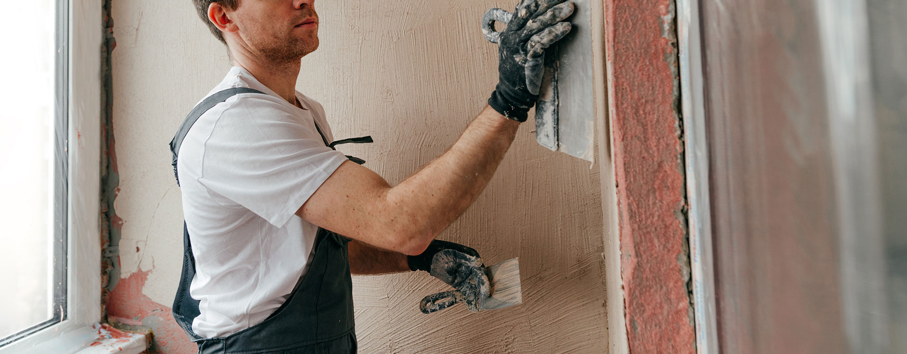
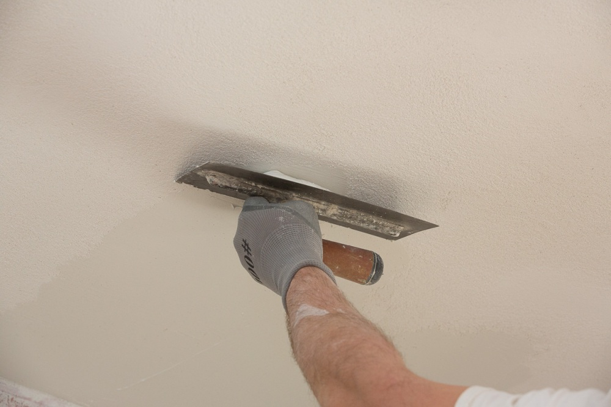

01
Ελαιοχρωματισμοί
Αναλαμβάνονται βαψίματα εσωτερικών και εξωτερικών χώρων. Περιλαμβάνονται: προετοιμασία επιφανειών, στοκαρίσματα, τρίψιμο και τελικά φινιρίσματα για άψογο αποτέλεσμα.
LEONARD • ΑΝΑΚΑΙΝΙΣΕΙΣ
Ολοκληρωμένες λύσεις ανακαίνισης για σπίτια και επαγγελματικούς χώρους, με ποιότητα, αξιοπιστία και προσοχή στη λεπτομέρεια. Αναλαμβάνονται εργασίες όπως ανακαινίσεις εσωτερικών χώρων, βαψίματα, μικροεπισκευές και γενικές τεχνικές παρεμβάσεις.
ΣΧΕΤΙΚΑ ΜΕ ΕΜΑΣ ↗
Με πάνω από 25 χρόνια εμπειρίας, προσφέρουμε αξιόπιστες και ποιοτικές λύσεις για κάθε έργο.
Αναλαμβάνονται βαψίματα εσωτερικών και εξωτερικών χώρων. Περιλαμβάνονται: προετοιμασία επιφανειών, στοκαρίσματα, τρίψιμο και τελικά φινιρίσματα για άψογο αποτέλεσμα.
Εργασίες σοβατίσματος για νέες ή παλιές επιφάνειες, επισκευές ρωγμών και φθορών, καθώς και εξομάλυνση τοίχων για σωστή βάση πριν το βάψιμο ή άλλες εργασίες.
Εφαρμογή κατάλληλων ασταριών για ενίσχυση της πρόσφυσης των υλικών και προστασία των επιφανειών, εξασφαλίζοντας μεγαλύτερη διάρκεια ζωής στο τελικό αποτέλεσμα.
Τοποθέτηση πλακιδίων σε δάπεδα και τοίχους σε μπάνια, κουζίνες και εξωτερικούς χώρους
Στεγανοποιήσεις ταρατσών και μπαλκονιών, επισκευές, αποκατάσταση φθορών και βελτίωση εξωτερικών χώρων.
Αναλαμβάνονται ολοκληρωμένες ή μερικές ανακαινίσεις σε κατοικίες, γραφεία και επαγγελματικούς χώρους.
Ποιοτική και καθαρή δουλειά.
Εμπειρία σε εσωτερικούς & εξωτερικούς χώρους.
Άμεση και αξιόπιστη εξυπηρέτηση.
Σεβασμός στον χώρο και στον χρόνο του πελάτη.
Τίμια δουλειά χωρίς πρόχειρες λύσεις.
Προσωπική εξυπηρέτηση.

LET'S TALK